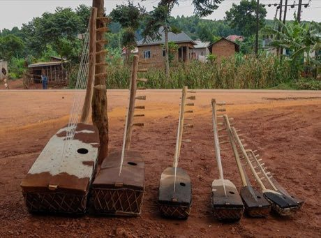

Home / Classical Worlds / Africa: Great Lakes and Indian Ocean
Playable heritage gameAdungu
Also known as arched harp
The adungu is an arched harp of Uganda: a boat-shaped hide-covered soundbox, a neck that curves up and over, and a leather ring at the top of every string. Players sit with it on the lap and pluck with both hands, low notes with one and a running line above with the other.


How to play
- Nine strings run from the arching neck down to tabs on the hide; the longest, lowest string is on the right and the shortest, highest on the left.
- Notes slide down the strings. Pluck a string at the moment its note reaches the tab on the hide.
- The music is made of short repeating patterns that lock together, a steady low figure and a lighter line above it.
- Choose Watch and learn to hear and see whole patterns played, then try them yourself.
Rules at a glance
- The strings are tuned close to an even seven-note scale, the tuning shared with xylophones and lyres of the region.
- The twelve-pulse pattern is counted in four groups of three.
- A pluck right on the pulse is perfect, a near one is good, and extra plucks cost points.
- Each pattern is played through twice.
- Watch and learn plays three teaching patterns in the style of the tradition; each can be slowed to a quarter speed.
About the tradition
The adungu is played in northern and western Uganda and is made from carved wood and hide by local craftspeople. Related arched harps are among the oldest stringed instruments, and in Uganda the adungu accompanies songs and dances.
Origins
Usually placed in the era of Classical Worlds (about 1000 BCE to 500 CE), although its exact origins are uncertain, within the cultural world of Africa: Great Lakes and Indian Ocean.
Credits
- Photo: Ssemmanda will, CC BY-SA 4.0, Wikimedia Commons
- Photo: Ssemmanda will, CC BY-SA 4.0, source on Wikimedia Commons
- Text: CC BY-SA 4.0, World Heritage Games.
Sources

Get the app
Adungu is one of 9 zithers and harps in the Zithers & Harps of the World app for Android. Live on Google Play. One app, many traditions, no account needed.
More games to play

Valiha tube zither
Madagascar · Musical instrumentsPlay preview · in the Zithers & Harps of the World app


Goje One-String Fiddle
Nigeria +1 · Musical instrumentsPlay preview · in the String Music of the World app
More from Uganda

Amadinda and embaire
Uganda · Musical instruments
Buganda barkcloth making
Uganda · Crafts and making
Kwepena
Uganda · Street and playground gamesDuulu
Uganda · Dexterity and skill gamesOdede
Uganda · Board and table games